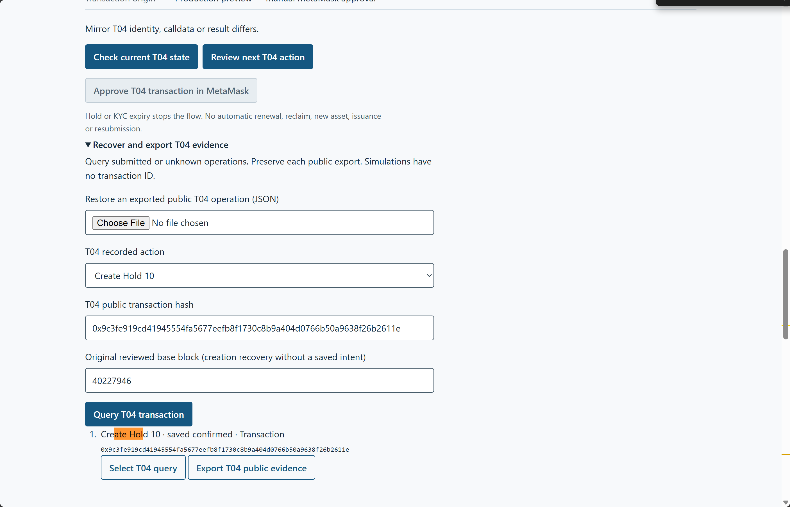
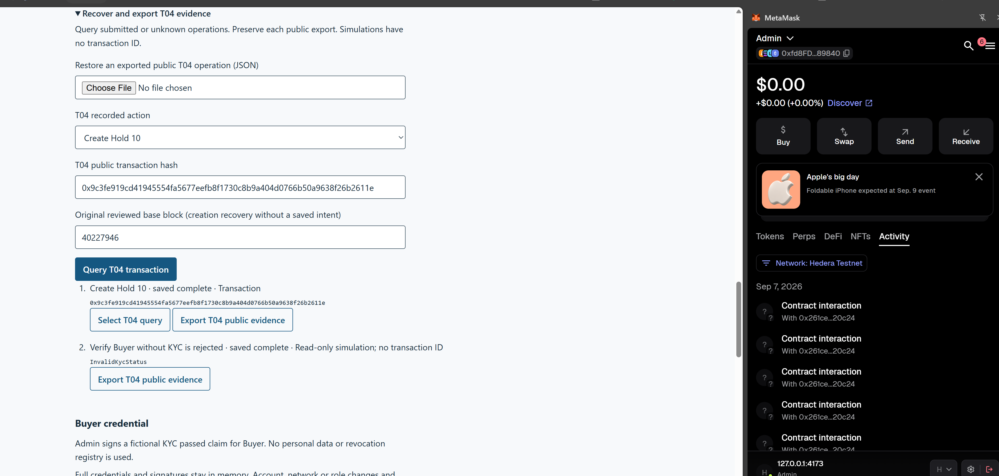
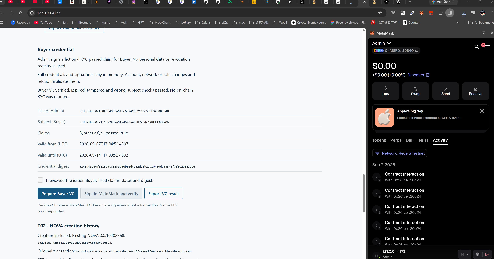
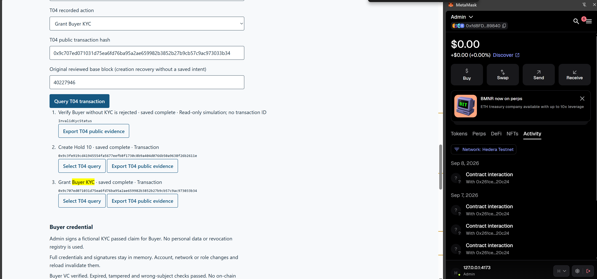
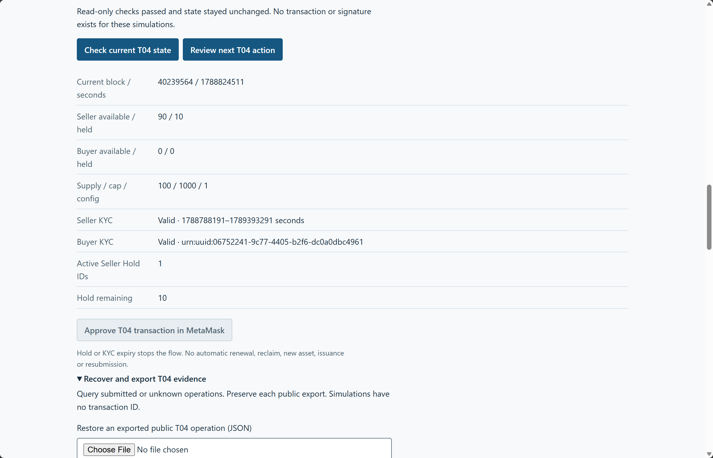
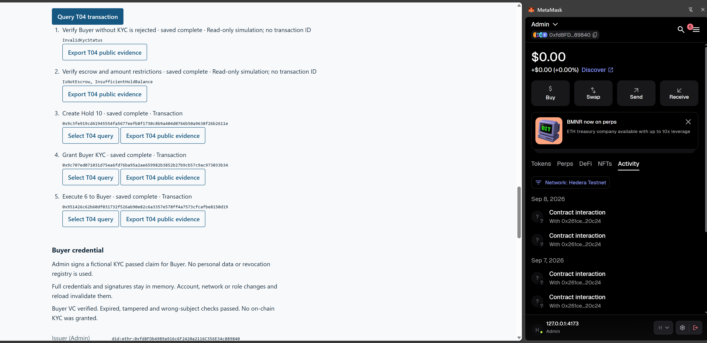
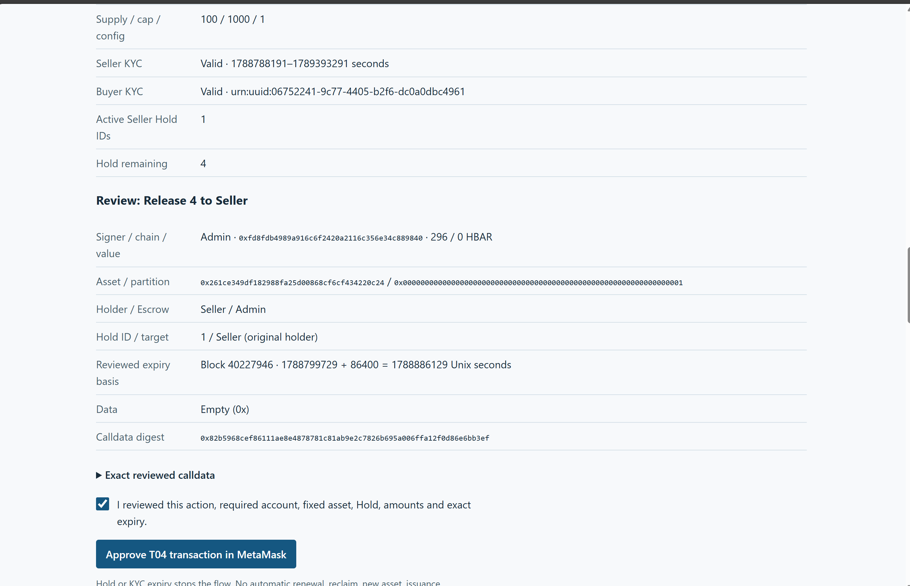
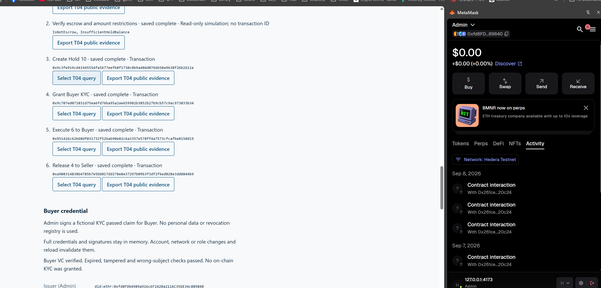

Complete at independently verified block 40241114. Seller available 94 / held 0; Buyer available 6 / held 0, valid KYC. Supply / cap / config: 100 / 1000 / 1. No active Holds.
Four manually approved preview transactions and one Buyer VC signature. All agent verification was read-only. Stop at T04; no push or merge.
Public verification JSON and replay harnesses · English summary
| Action | Transaction hash | Hedera transaction ID | Blocks |
|---|---|---|---|
| Create Hold 10 | 0x9c3fe919cd41945554fa5677eefb8f1730c8b9a404d0766b50a9638f26b2611e | 0.0.7314364-1788799829-835192336 | 40227993 → 40227994 |
| Grant Buyer KYC | 0x9c707ed071031d75ea6fd76ba95a2ae659982b3852b27b9cb57c9ac973033b34 | 0.0.7314364-1788823353-975460505 | 40239020 → 40239021 |
| Execute 6 to Buyer | 0x951426c62b60df031732f526ab90e82c6a3357e578ff4a7573cfcafbe8150d19 | 0.0.7314364-1788826409-160110602 | 40240453 → 40240454 |
| Release 4 to Seller | 0xa908314838b4785b7e5bb017dd278e8e37297b09b3f3df2f6ed028e3dd8844b9 | 0.0.7314364-1788826985-112569666 | 40240717 → 40240718 |
# T04 manual acceptance — September 8, 2026 **Complete at independently verified block 40241114. Stop at T04.** Victor performed four preview MetaMask transactions and one Admin-to-Buyer VC signature. The agent used public read-only RPC/Mirror queries and historical simulations. Acceptance base: `f3dfa0ba6e07a4d282fedcee770fb936ac5728f4`; branch `feat/t04-hold-lifecycle`. | Verified final field | Result | | --- | --- | | NOVA / chain / config | 0.0.10402368 / 296 / 1 | | Seller available / held | **94 / 0** | | Buyer available / held / KYC | **6 / 0 / valid** | | Supply / cap | **100 / 1000** | | Active Seller / Buyer Hold IDs | Both empty | | Admin roles / issuer; Seller KYC | Present / registered; valid | | Actual transaction | Before → after block | Verification | | --- | --- | --- | | [Create Hold 10](https://hashscan.io/testnet/transaction/0x9c3fe919cd41945554fa5677eefb8f1730c8b9a404d0766b50a9638f26b2611e) | 40227993 → 40227994 | Complete | | [Grant Buyer KYC](https://hashscan.io/testnet/transaction/0x9c707ed071031d75ea6fd76ba95a2ae659982b3852b27b9cb57c9ac973033b34) | 40239020 → 40239021 | Complete | | [Execute 6 to Buyer](https://hashscan.io/testnet/transaction/0x951426c62b60df031732f526ab90e82c6a3357e578ff4a7573cfcafbe8150d19) | 40240453 → 40240454 | Complete | | [Release 4 to Seller](https://hashscan.io/testnet/transaction/0xa908314838b4785b7e5bb017dd278e8e37297b09b3f3df2f6ed028e3dd8844b9) | 40240717 → 40240718 | Complete | Each recovery verified the exact receipt/event/calldata, zero value, signer, asset/partition/Hold ID, historical before/after state, original expiry basis, Mirror sender mapping, block, consensus timestamp and transaction ID. Hold **1** used Seller as holder, Admin as Escrow, zero destination and empty data. Expiry remained **1788886129**, from base block **40227946** / **1788799729 + 86400**. Release used the original Seller target. Its event, held 0 and removal from active IDs jointly prove completion without querying the deleted Hold details. Historical replay of export **(14)** reproduced genuine SDK AccountNotKycd and exact `InvalidKycStatus` eth_call revert from Admin for execute 6 at block 40228392. Export **(18)** replayed Seller execute 6 → `IsNotEscrow`, and Admin execute 11 → `InsufficientHoldBalance(10,11)` at 40239552. Both recorded before/after snapshots match independent historical reads and remain unchanged. These are simulations with **no transaction ID or signature**. Buyer VC ID **urn:uuid:06752241-9c77-4405-b2f6-dc0a0dbc4961** matches grant calldata and the on-chain KYC getter. Admin issuer, Buyer subject, public digest and Unix validity **1788800692–1789405792** correspond across exports (15)/(17). The screenshot/export show application verification and expired/tampered/wrong- subject rejection. Full VC/proof was not retained or independently replayed; this remains synthetic KYC. T02 historical supply **0 at 40209377** and all six T03 transactions were reverified independently of current Buyer KYC; T03 issue history remains Seller 100 / Buyer 0 at **40223460**. [Public JSON, replay harnesses and validation](029-t04-manual.json) and the [standalone screenshot report](029-t04-manual.html) preserve eight supplied exports (13)–(20) and eight original captures. (16) is the earlier pending Buyer KYC record; (17) is complete. The original creation recovery error and its block-time repair remain documented in the JSON's prior summary/repair evidence. The latest screenshot is a completed journal, not a balance table; final values above come from independent current RPC. Journal row order is not transaction chronology. VC-panel wording “No on-chain KYC was granted” describes the signature step's outcome; the separately verified grant establishes later on-chain KYC. `npm ci`, **87 app + 36 proto tests**, typecheck/build, four dev/preview smoke/cancel cases and offline report checks pass. This acceptance changes only documentation/evidence. Native BBS exclusion, 62 audit findings, peer/dfns license limits and unresolved pre-event eligibility remain. No payment settlement or completed secondary market is claimed. **No further T04 transactions, push, merge or next ticket are authorized.**
Captures are ordered by lifecycle stage. The first preserves the original repaired error; the last is the completion journal. Final current balances come from independent RPC, not an additional user screenshot.







